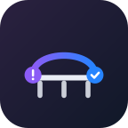

QuietstackSentry Bridge for Jira · last updated 16 July 2026
This policy explains what Sentry Bridge for Jira (“the app”) does with data. It is short because the app does very little with data.
The app runs entirely on Atlassian Forge, Atlassian’s hosted platform, inside Atlassian’s infrastructure. There is no server operated by us. Your data is not sent to any third party, and it is not sent to us.
From Sentry. When you configure a webhook in your own Sentry organisation pointing at your app’s URL, Sentry sends the app an event payload. It contains: the Sentry issue id, title, culprit, level, environment, project slug, event count, first-seen timestamp, a permalink, and — for error events — the exception type, message and stack frames.
From Jira. The app reads your project’s issue types and statuses so it can offer them in the settings screen, and reads an issue’s status when deciding whether to reopen it.
Inside Atlassian’s own storage, scoped to your installation:
Nothing else is stored. There is no analytics, no telemetry, no profiling, and no tracking of your users.
Jira issues and comments in the project you configured, as the app user. Content comes from the Sentry payload you sent it.
The app does not intentionally collect personal data. It does not read Jira users, customers, or customer data.
Sentry error payloads may contain personal data if your own application put it there — for example a username in an exception message or a stack frame variable. The app copies the payload fields listed above into the Jira issue description. If your Sentry events contain personal data and you do not want it in Jira, strip or scrub it in Sentry before it reaches the webhook — Sentry supports server-side data scrubbing.
Settings and link records live for as long as the app is installed. Uninstalling the app removes its storage. Jira issues the app already created are yours and stay in your Jira.
None. The app makes no outbound network calls. It has no egress permissions in its manifest — you can verify this on the app’s permission screen at install time.
401.Material changes to this policy will be published here with a new date.
Questions about this policy: privacy@quietstack.app
Security reports: security@quietstack.app